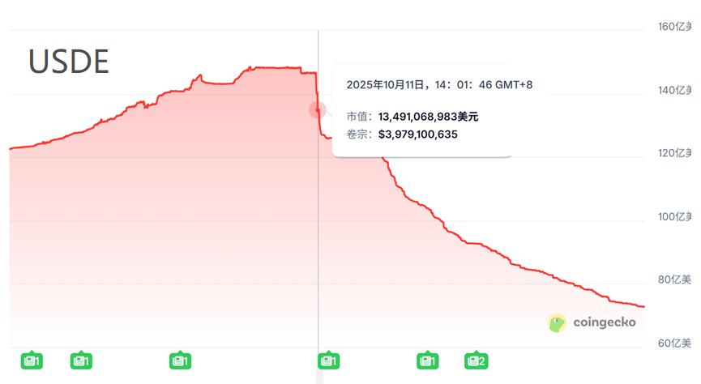
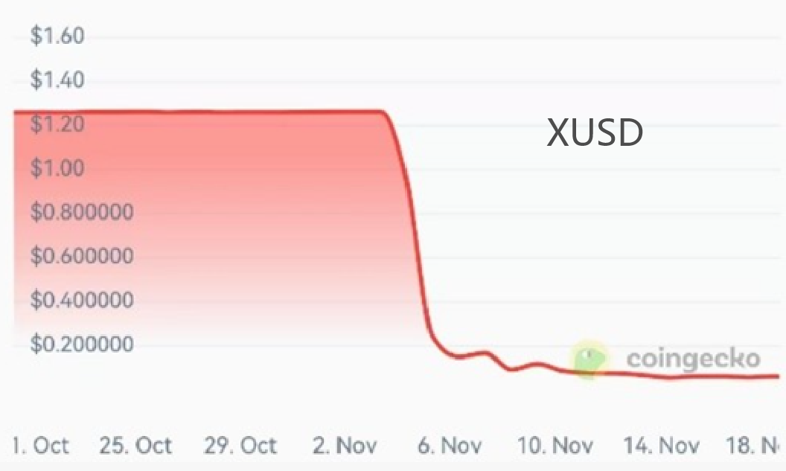
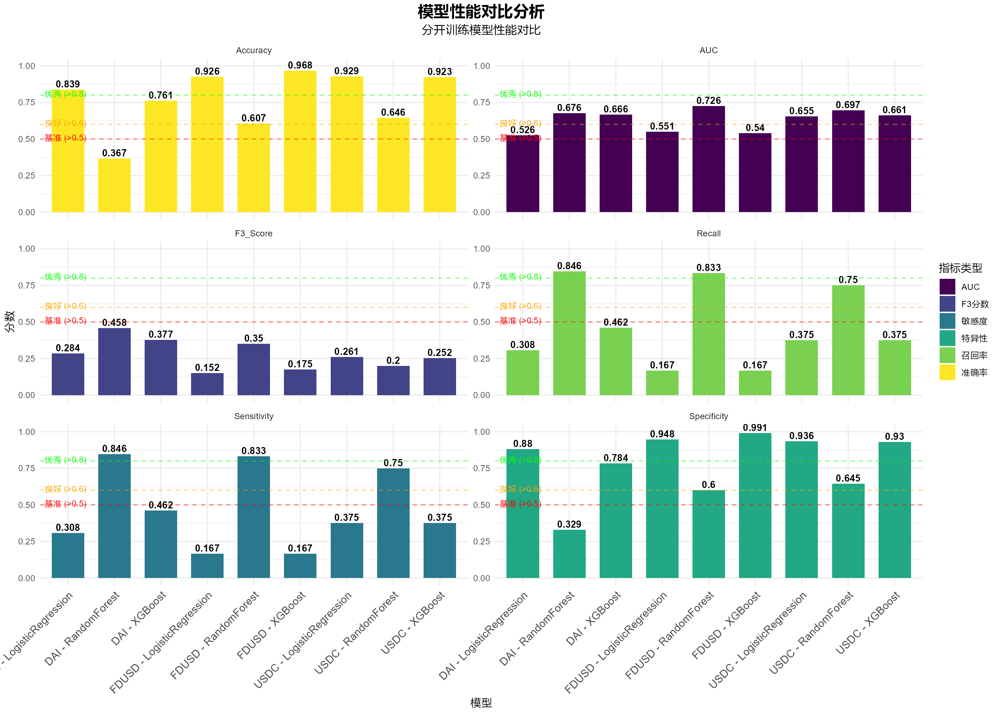

稳定币脱锚风险监测与个性化评估系统
2026-02-01
随着加密金融体系的快速扩张，稳定币已成长为加密生态的系统性重要节点。一旦发生脱锚事件，风险可能通过流动性枯竭、抵押资产价值下跌与市场信心崩塌等机制传导，引发系统性冲击。
然而，TerraUSD（UST）崩盘、XUSD 脱锚等事件表明，稳定币并非“天然稳定”，其价格锚定机制在极端市场环境下可能失效。


我们发现，现有稳定币风险管理存在风险暴露滞后、信息高度专业化且分散、缺乏个性化视角等不足。
在此背景下，本项目提出构建 AnchorWatch——稳定币脱锚风险智能监控与评估系统，旨在通过可视化监控与个性化评估，将复杂的稳定币脱锚风险转化为直观、可操作的预警信号，帮助投资者与管理者在不确定的加密市场中做出更理性、更审慎的决策。
AnchorWatch 通过降低信息理解与风险识别门槛，为投资者构建一套可靠的风险监测与预警工具，从而降低其进入加密金融领域的认知成本与操作风险，赋能每一位市场参与者并在长期上助力稳定币生态的健康发展。
我们期望AnchorWatch可以实现四大核心功能：
多源数据整合与实时监测：可以自动化调用链上与市场 API，整合价格、交易量、链上活跃度、BTC 波动率等多维度数据。（实际项目以截至近日的历史数据为主）
机器学习驱动的脱锚概率预测：基于 R 语言环境，结合已有学术研究，利用逻辑回归、随机森林与 XGBoost 等模型构建预测框架，输出稳定币在未来短期内（24 小时）发生脱锚事件的预测概率，为风险预警提供量化依据。
交互式可视化监管仪表盘：基于 shiny 构建前端界面，结合 ggplot2 与 plotly，实现时间序列预测曲线、特征重要性图等可视化结果，并以直观的“红—黄—绿灯”形式呈现稳定币当前风险状态。
个性化风险测算模块：在这个模块中用户可输入自身持有的稳定币组合与资产总额，系统将结合市场风险数据，输出个体化的风险评分，并展示潜在损失，实现面向个人投资者的精细化风险管理。
本研究采用多源数据整合方法，构建了一个覆盖稳定币市场、加密货币市场、传统金融市场以及宏观与系统性风险指标的综合性数据集。最终用于建模的样本共包含 稳定币4111 条日度观测值，其中：
其中，稳定币相关数据通过Binance、Kraken、OKX、KuCoin和CoinGecko的多网站API数据相互补充获取。
参考Carey (2023)的研究结论，固定阈值方法可能无法充分反映不同稳定币在流动性水平与市场深度方面的差异。我们采用动态阈值法来定义“脱锚”事件。
\[ \text{Thresh}_D = 1 - \frac{10}{\sqrt[3]{V_{\text{monthly}}}} \] \[ \text{Thresh}_U = 1 + \frac{10}{\sqrt[3]{V_{\text{monthly}}}} \]
其中 \(V_{\text{monthly}}\) 为滚动30天交易量总和。
若当日最低价 \(P_L < \text{Thresh}_D\) 或最高价 \(P_H \geq \text{Thresh}_U\)，则标记为脱锚（\(Y = 1\)）。
| 稳定币 | 类型 | 选择原因 | 脱锚次数 | 脱锚率 |
| USDC | 法币抵押型 | 市场份额大、监管透明度高、多次历史脱锚事件 | 144 | 5.69% |
| DAI | 加密货币抵押型 | 去中心化代表、超额抵押机制、价格波动性较高 | 36 | 4.99% |
| FDUSD | 新兴法币抵押型 | 2023年7月上线，代表新兴稳定币的市场行为与风险特征 | 76 | 8.81% |
在此基础上，对于被解释变量与解释变量做了特征工程处理
| 类别 | 特征 | 作用 |
|---|---|---|
| 基础价格 | 滞后特征：前1天、2天、3天的收盘价和交易量 | 近期惯性 |
| 价格变化：当日价格与前一日价格的百分比变化 | 单日涨跌 | |
| 对数收益（ln(当日收盘价/前一日收盘价)） | 标准化收益 | |
| 趋势动量 | 移动平均线：7日和30日简单移动平均 | 短/中期趋势 |
| 价格与均线的关系：(收盘价/移动平均 - 1) × 100 | 相对强弱 | |
| 动量指标：过去5天、10天、20天的价格变化率 | 加速度 |
| 类别 | 特征 | 作用 |
|---|---|---|
| 波动技术 | 波动率计算：7日和30日价格变化的标准差 | 短期/长期风险 |
| RSI相对强弱指数：14日周期 | 超买超卖 | |
| 价格通道：20日最高价通道和最低价通道 | 压力/支撑 | |
| 通道位置：(收盘价 - 通道最低价)/(通道最高价 - 通道最低价) | 区间定位 | |
| 时间成交 | 时间特征：星期几、月份、是否周末 | 日历效应 |
| 交易量特征：交易量移动平均、交易量变化率 | 资金流动强度 | |
| 交易量比率：当日交易量/6个月滚动中位数 | 标准化交易量 | |
| 滚动交易量特征：30日滚动交易量及其变化 | 成交量趋势 |
数据来源基于已有文献中广泛使用的公开数据库与指标体系，包括66个特征：
| 类别 | 数据来源 | 具体指标 | 文献依据 |
|---|---|---|---|
| 抵押资产（美元）相关 | 美联储、iFinD、密歇根大学 | 美元指数，联邦基金利率，美国1年通胀预期，TED利差指数，美国贸易差额，美国2年期国债利率，美国10年期国债利率等 | Lyons & Viswanath-Natraj (2023) |
| 稳定币自身相关属性 | DeFiLlama API、Binance API（CEX）、Uniswap API（DEX）、MakerDAO API | 赎回量，DEX流动性池深度，CEX与DEX价格差等 | Baur & Hoang (2021) |
数据来源基于已有文献中广泛使用的公开数据库与指标体系，包括66个特征：
| 类别 | 数据来源 | 具体指标 | 文献依据 |
|---|---|---|---|
| 加密货币相关属性 | Binance API | BTC和ETH的价格、交易量与历史分位数等 | Ante et al. (2023) |
| 市场与风险指标 | 美国金融研究办公室、芝加哥期权交易所(CBOE)、iFinD | SP500、 NASDAQ、 Dow收盘价及波动率，VIX指数，地缘政治风险GPR指数，系统性金融压力指数（KCFSI, STLFSI），美国金融压力指数，Baker-Bloom-Davis经济政策不确定性指数等 | Lin et al. (2023) |
| USDC | 数据行数 | 脱锚事件数 | 脱锚比例 | 用途 |
| 训练集 | 1896条 | 136次 | 7.17% | 模型训练 |
| 测试集 | 633条 | 8次 | 1.26% | 模型评估 |
| DAI | 数据行数 | 脱锚事件数 | 脱锚比例 | 用途 |
| 训练集 | 540条 | 23次 | 4.26% | 模型训练 |
| 测试集 | 180条 | 13次 | 7.22% | 模型评估 |
| FDUSD | 数据行数 | 脱锚事件数 | 脱锚比例 | 用途 |
| 训练集 | 646条 | 69次 | 10.68% | 模型训练 |
| 测试集 | 216条 | 6次 | 2.78% | 模型评估 |
我们选择了三种不同类型的机器学习模型进行对比：
1.逻辑回归： 作为基准线性模型，逻辑回归解释性强，不易过拟合，在特征线性可分的情况下表现良好，但是在极端不平衡数据上可能表现不稳定。
2.随机森林： 它作为一种集成学习方法，能很好处理非线性关系而且自带特征重要性评估，在特征工程充分的情况下应有较好的综合性能。
3.XGBoost： 是一种梯度提升算法，比较擅长处理结构化数据，具有正则化防止过拟合的优势，预测准确率较高到那时要小心过拟合。
| Coin | Model | Accuracy | Recall | Specificity | AUC | F3_Score |
| USDC | Random Forest | 0.646 | 0.75 | 0.645 | 0.697 | 0.2 |
| FDUSD | Random Forest | 0.606 | 0.833 | 0.6 | 0.726 | 0.350 |
| DAI | Random Forest | 0.367 | 0.846 | 0.329 | 0.676 | 0.458 |

| Feature | Avg_Importance | Std_Importance |
| price_volatility | 5.054217 | 6.785065 |
| volatility_30d | 4.40032 | 6.125663 |
| volatility_7d | 3.89628 | 5.439595 |
| price_range | 3.389878 | 4.685118 |
| high | 2.46799 | 3.435151 |
| volume_6m_rolling_median | 2.437492 | 3.438267 |
| channel_high_20 | 2.049599 | 2.871044 |
| momentum_20 | 1.938432 | 2.731051 |
从以上通过随机森林模型得到的特征重要性数据可以看出：最关键的特征分别是价格波动、中期波动率、短期波动率和价格范围。